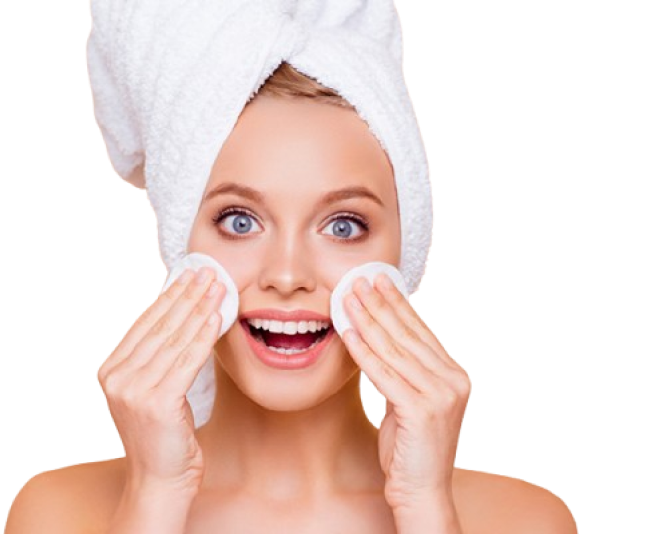
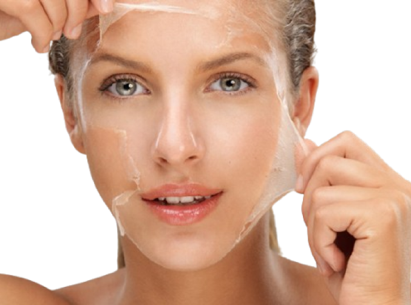
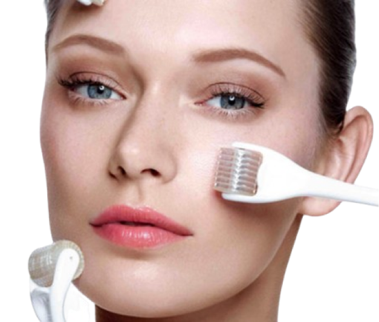
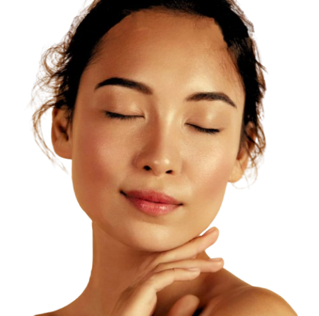

Limpeza de Pele
Remove impurezas, cravos e células mortas, desobstruindo os poros. O resultado é uma pele mais saudável, luminosa e preparada para absorver melhor os cosméticos.

Peeling Químico
Utiliza ácidos controlados para renovar a superfície da pele, suavizando manchas, rugas finas e cicatrizes de acne, revelando uma pele mais uniforme e jovem.

Microagulhamento
Estimula a produção natural de colágeno e elastina através de microlesões controladas, melhorando a textura da pele e reduzindo cicatrizes e poros dilatados.

Hidratação Profunda
Repõe intensamente a água e os nutrientes essenciais, combatendo o ressecamento e a flacidez. Deixa a pele macia, sedosa e com um viço natural.